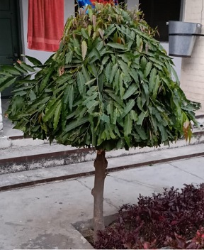

Ashoka Tree
Scientific name = Saraca asoca
The ashoka tree; "sorrow-less",is an important tree in the cultural traditions of the Indian subcontinent and adjacent areas. The ashoka is a rain-forest tree.
Its original distribution was in the central areas of the Deccan plateau,
as well as the middle section of the Western Ghats in the western coastal zone of the Indian subcontinent.
The ashoka is prized for its beautiful foliage and fragrant flowers. It is a handsome, small, erect evergreen tree, with deep green leaves growing in dense clusters.
Its flowering season is around February to April. The ashoka flowers come in heavy, lush bunches. They are bright orange-yellow in color, turning red before wilting.
As a wild tree, the ashoka is a vulnerable species. It is becoming rarer in its natural habitat, but isolated wild ashoka trees are still to be found in the
foothills of the central and eastern Himalayas, in scattered locations of the northern plains of India as well as on the west coast of the subcontinent near Mumbai.
The ashoka tree is considered sacred throughout the Indian subcontinent, especially in India, Nepal and Sri Lanka. This tree has many folklorical, religious and literary associations in the region. Highly valued as well for its handsome appearance and the color and abundance of its flowers, the ashoka tree is often found in royal palace compounds and gardens as well as close to temples throughout India.